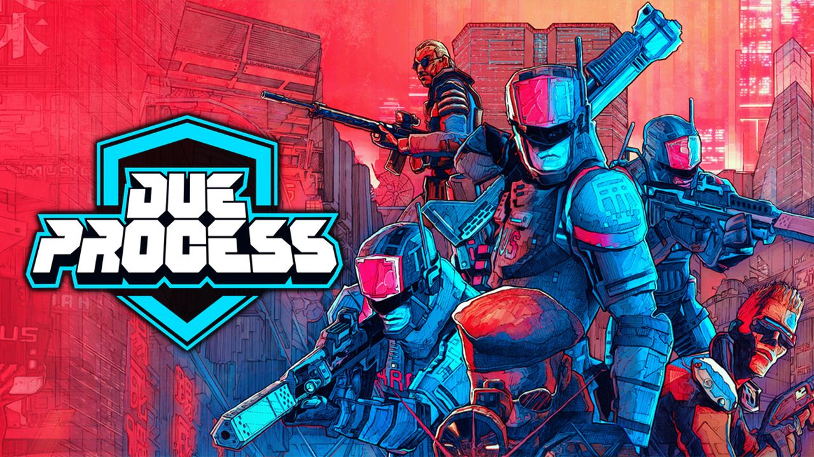

A multiplayer FPS game developed by Giant Enemy Crab that I contribute towards
I was invited to start contributing towards Due Process in October of 2025, and
have been fixing bugs, and improving player experience ever since. Due to the
scope of the project, my main role has been to find player reports of bugs and
solve them independently. Contributing to this game has taught me about the importance
of considering how others will read the code you write. It is one thing to write code that
works, but another to write code that others can understand easily.

Tech stack:
Jira, Confluence, Discord for team management
Unity, Plastic SCM
C#, Visual Studio
Find and deploy fixes, using Plastic SCM
Main responsibilities
Use Jira, Confluence to find high priority bug reports
Independently familiarise myself with codebase to understand the cause of a bug
Find and deploy fixes, using Plastic SCM
Communicate with the team to prioritize work load
Bug Spotlight🐛
Players reported an issue when viewing the scope of one gun model
I explored the issue, and the context that would cause it
Found that an old script was retrieving the incorrect screen resolution setting
This was skewing the scoped view, which I fixed and the scoped view is now correct